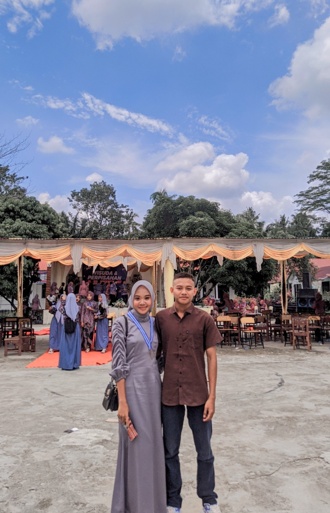

Untuk Windi
Web Ini Aku Buat Khusus Untuk Wanita Terbaik Yang Pernah Aku Miliki

Browser kamu tidak mendukung audio.
Klik Untuk Mendengarkan
(*disarankan untuk menaikan volume)
Klik
Disini
Untuk Selanjutnya